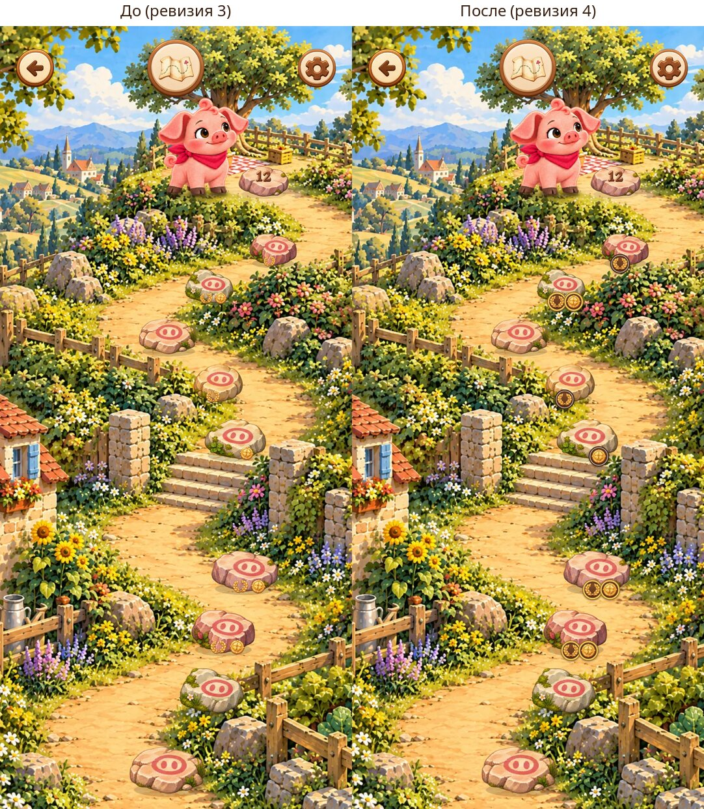
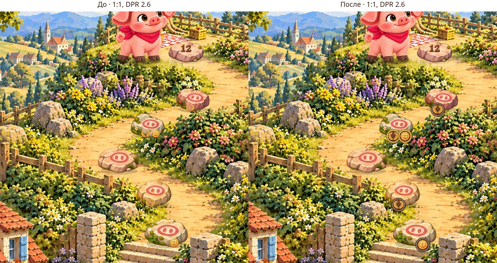
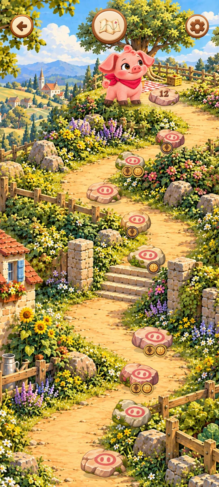
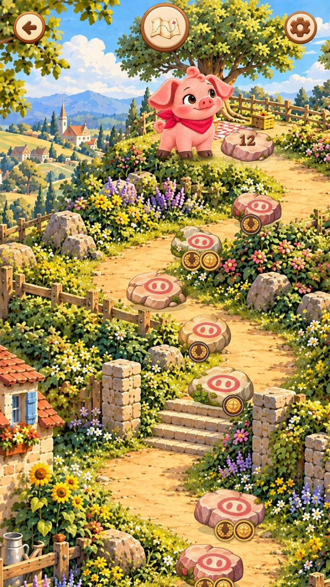
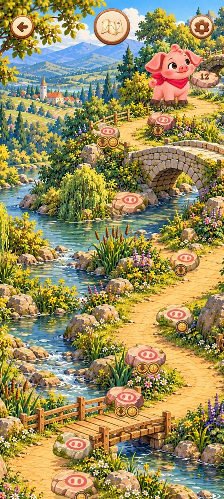
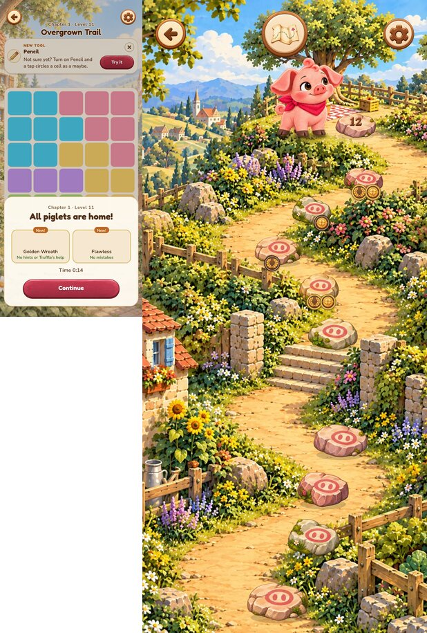
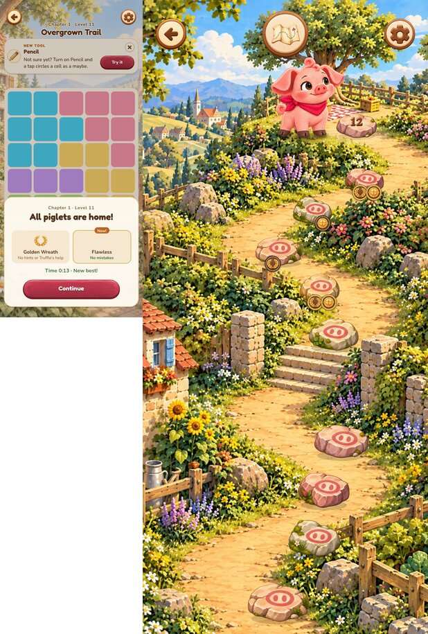
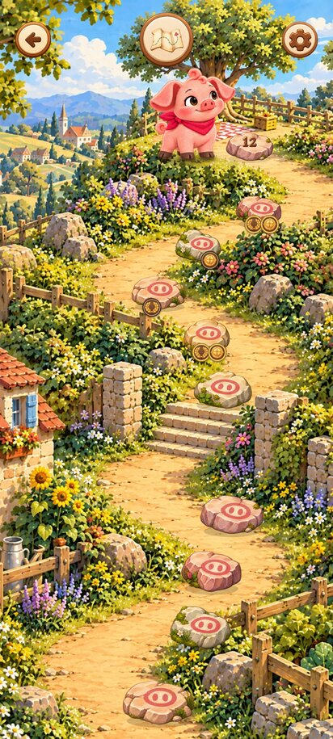

PR #394: медали на камнях карты (ревизия 4)
Исходник: 3d715b31 (PR #394) · Игровое превью. Снимки локальной сборки этого коммита, Chromium (программный WebGL). На телефоне стоит проверить вживую.
Что было не так в ревизии 3: светлые значки на светлом камне (мало контраста), размер привязан к камню — на дальних камнях они сжимались до нескольких пикселей и размывались при масштабировании текстуры.
Что теперь: каждая медаль вставлена в тёмную эмалевую оправу (каштан → орех, кора по краю, светлое кольцо), медали стоят парой у основания камня, как монеты. Безупречное прохождение — золотое кольцо. Размер фиксирован в экранных пикселях (19 CSS px, на дальних камнях не меньше 90%), текстура рисуется 1:1 под плотность экрана — без размытия.
1. До и после: та же карта, тот же сейв

2. Камни крупно, 1:1 к экрану телефона

3. Карта главы 1, 412×915, DPR 2.625

4. Маленький экран 360×640

5. Глава 3 (другой фон)

6. Настоящая победа: результат и обе новые медали на карте

7. Повторное прохождение: новая медаль «без ошибок»

8. Reduced motion
